1.環境を整える
ここでは、まずソースコードを書くために快適な環境を整えていきます。
※私のPCは、WindowsなのでMacを使用している方は、同じ手順でできない可能性があります。
⭐Visual Studio Code(VSCode)をインストール
VSCodeは、便利なメモ帳みたいなものです。
ソースコードに色付けて見やすくしてくれたり、自動補完機能がついていたりなどなど…
ただ、これをインストールしなくても、PCに入ってるメモ帳でソースコードを書くことはできます。
最近は、AIにソースコードを書いてもらったりするらしいですが、そういう場合は使わないんですかね？
私は、AIについていけてないので、昔ながらのやり方で進めますが、不要な方はインストールしなくて大丈夫です。
VSCode ダウンロードページ
上記のリンクから、ファイルをダウンロードして進めていって、VSCodeを開いてください。
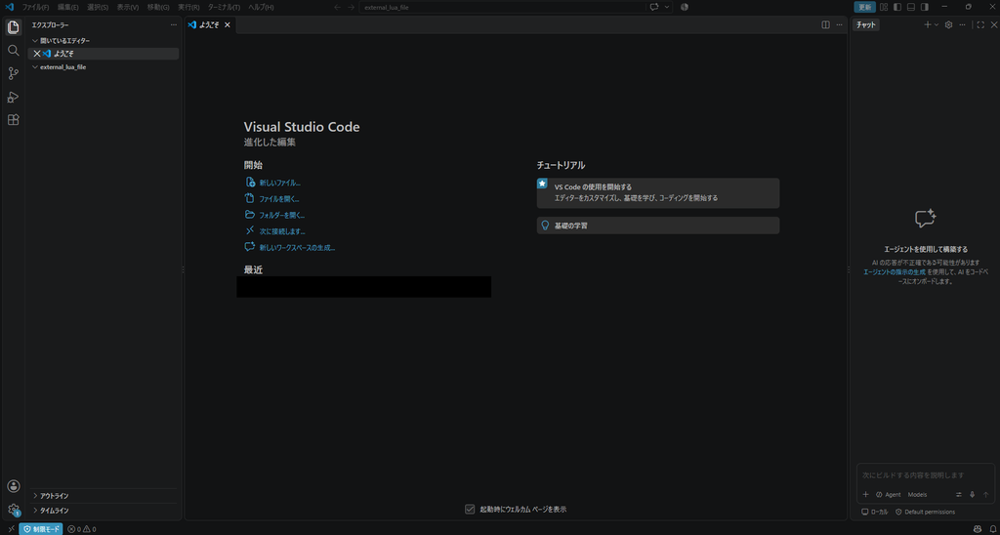
今、私の画面は日本語になっていますが、最初は英語だと思うので拡張機能をインストールします。
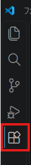
左のサイドメニューにある、四角が4つのアイコンをクリックします。
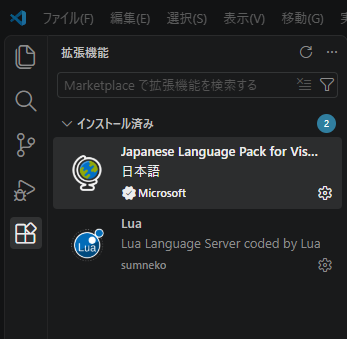
検索欄に「日本語」と入れて、出てきた地球儀アイコンのパッケージをインストールしてください。
これでVSCodeが日本語になります。
また、検索欄に「Lua」と入れて、画像と同じアイコンのパッケージもインストールしてください。
これでLuaを使えるようになります。
※拡張機能をインストールした後は、VSCodeを開き直すことで拡張機能が反映されると思います。
⭐作業用のフォルダをVSCodeで開く
どこにあるフォルダでも問題ありませんが、ここでは星々の幻境のプロジェクトフォルダを作業用フォルダとして進めます。
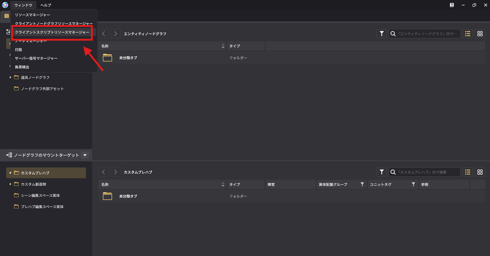
星々の幻境のエディタ画面を開きます。
ウィンドウから、クライアントスクリプトリソースマネージャーをクリックします。
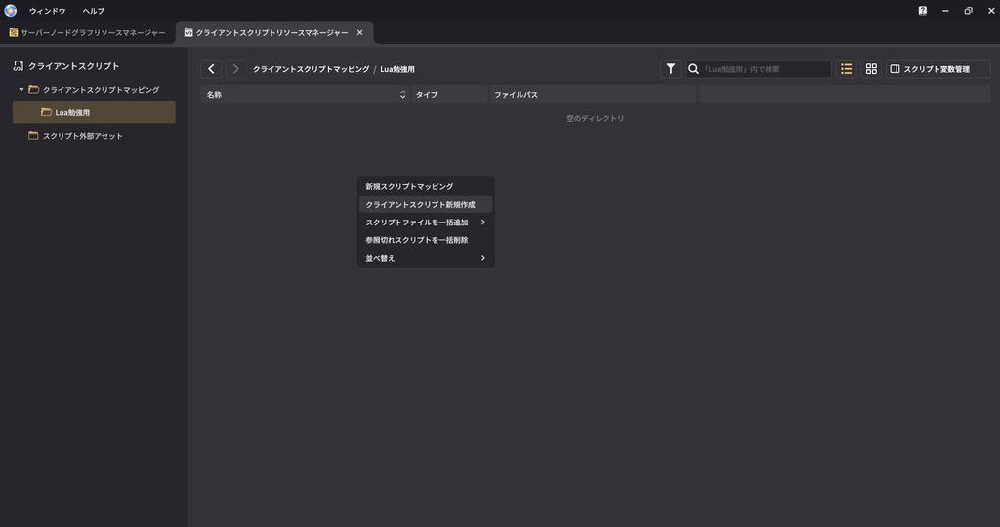
フォルダの中で、右クリックをして「クライアントスクリプト新規作成」をクリックします。
※フォルダー名を変更しているので、「Lua勉強用」となっていますが、何もしていなければ「未分類タブ」になっていると思います。
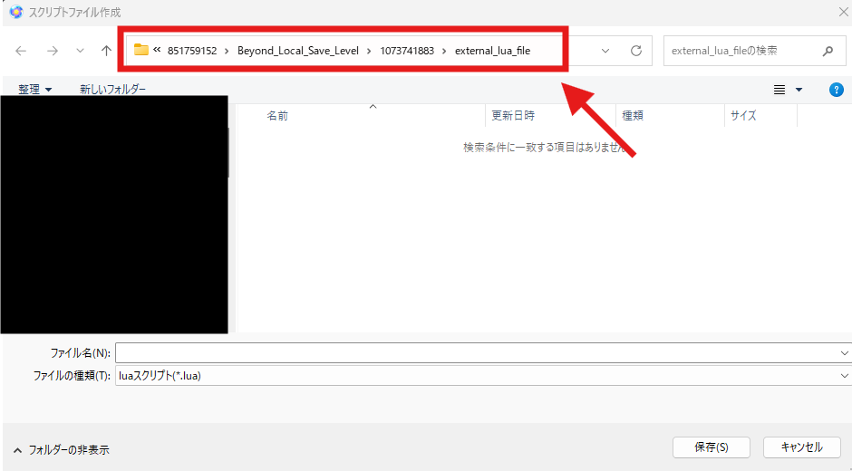
フォルダパスをすべてコピーしてください。
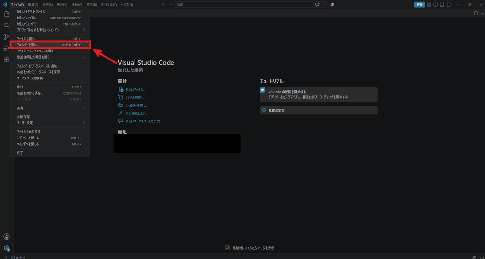
VSCodeの方に移動し、左上のファイルから「フォルダーを開く」をクリックして、先ほどコピーしたフォルダパスのフォルダを選択します。
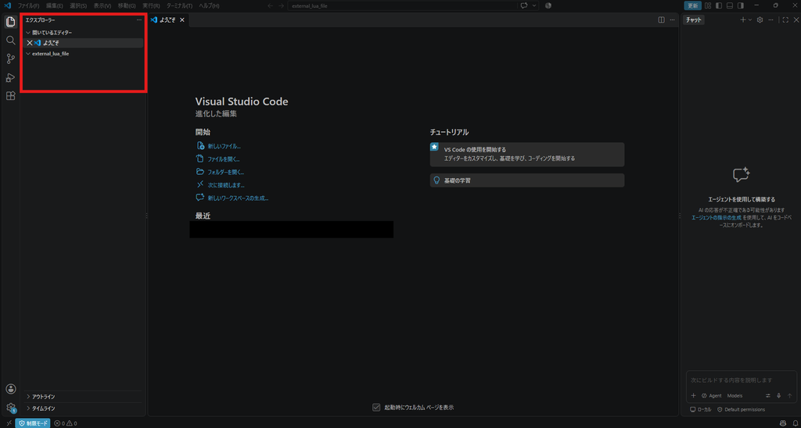
フォルダを選択すると、左側に「external_lua_file」と表示されていると思います。
※このエリアが表示されていなかったら、左のサイドメニューの一番上のアイコンをクリックしてすることでこのエリアが表示されます。
これで星々の幻境のプロジェクトフォルダをVSCodeの作業用フォルダにすることができました。
⭐いくつかの設定
※必須ではないので、不要な方はしなくて大丈夫です。
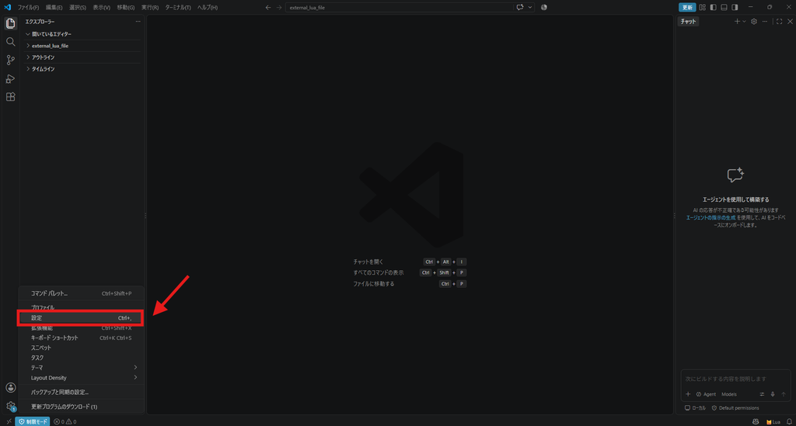
左下の歯車マークのアイコンでメニューを開き、「設定」をクリックします。
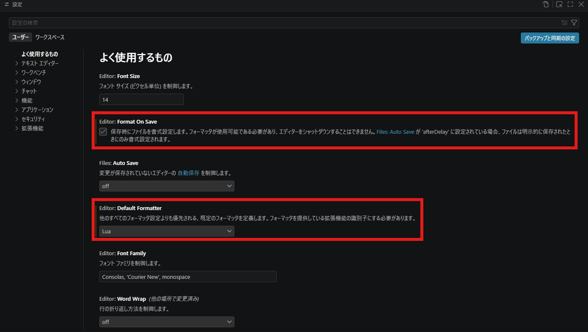
Editor: Format On Saveにチェックを入れます。
これで保存時に自動でソースコードを整形します。 Editor: Default
Formatterを「Lua」に変更します。
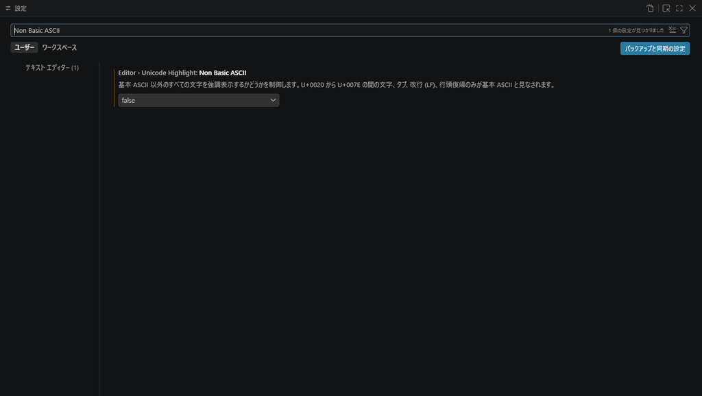
検索欄で「Non Basic ASCII」と入力し、出てきたプルダウンの「false」に変更します。
これで日本語がソースコード内に書かれた時に警告が出なくなります。